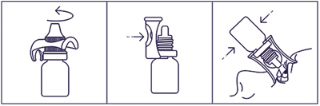

|
 |
| ТРАВАКСАЛ (TRAVAXAL) travoprost капли глазные | ||||||||||||||||||||||||||||||||||||||||||||||||||||||||||||||||||||||||||||||||||||||
|
Клинико-фармакологическая группа: Противоглаукомный препарат - синтетический аналог простагландина F2α Номер и дата регистрации: ЛП-005868 от 22.10.19 Код ATX: S01EE04 |
Владелец регистрационного удостоверения: зарегистрировано и произведено Представительство: | |||||||||||||||||||||||||||||||||||||||||||||||||||||||||||||||||||||||||||||||||||||
Форма выпуска, состав и упаковка Капли глазные в виде прозрачного или опалесцирующего, бесцветного или окрашенного раствора.
Вспомогательные вещества: маннитол - 46 мг, макрогола глицерилгидроксистеарат - 5 мг, борная кислота - 3 мг, трометамол - 1.2 мг, бензалкония хлорид - 0.15 мг, динатрия эдетата дигидрат (трилон Б) - 0.1 мг, 8М раствор натрия гидроксида или 8М раствор хлористоводородной кислоты - до рН 5.5-7.0, вода д/и - до 1 мл. 2.5 мл - флаконы из полиэтилена низкой плотности× (1) с капельницей - пачки картонные. × с упорным устройством или без него. | ||||||||||||||||||||||||||||||||||||||||||||||||||||||||||||||||||||||||||||||||||||||
| ||||||||||||||||||||||||||||||||||||||||||||||||||||||||||||||||||||||||||||||||||||||
Описание препарата основано на официально утвержденной инструкции по применению и утверждено компанией-производителем для издания 2022 г. | ||||||||||||||||||||||||||||||||||||||||||||||||||||||||||||||||||||||||||||||||||||||
Фармакологическое действие |
Фармакокинетика |
Показания |
Режим дозирования |
Побочное действие |
Противопоказания |
Беременность и лактация |
Особые указания |
Передозировка |
Лекарственное взаимодействие |
Условия хранения и сроки годности |
Условия реализации
Фармакологическое действие
Травопрост - синтетический аналог простагландина F2α, является высокоселективным полным агонистом простагландиновых рецепторов (FP) и снижает внутриглазное давление путем увеличения оттока водянистой влаги через трабекулярную сеть и увеосклеральные пути. Внутриглазное давление снижается приблизительно через 2 ч после применения, а максимальный эффект достигается через 12 ч. Значительное снижение внутриглазного давления может сохраниться в течение 24 ч после однократного применения препарата. Фармакокинетика
Всасывание и распределение Травопрост абсорбируется через роговицу глаза, где происходит гидролиз травопроста до биологически активной формы - свободной кислоты травопроста. Cmax свободной кислоты травопроста в плазме крови достигается в течение 10-30 мин после местного применения и составляет 25 пг/мл и менее. Метаболизм и выведение Свободная кислота травопроста быстро выводится из плазмы, в течение часа концентрация снижается ниже порога обнаружения (менее 10 пг/мл). Т1/2 свободной кислоты травопроста у человека установить не удалось в связи с ее низкой концентрацией в плазме и быстрым выведением из организма после местного применения препарата. Метаболизм является основным путем элиминации травопроста и свободной кислоты травопроста. Пути системного метаболизма параллельны путям метаболизма эндогенного простагландина F2α, которые характеризуются восстановлением двойной связи 13-14, окислением 15-гидроксильной группы и β-оксидативным расщеплением звена верхней боковой цепи. Свободная кислота травопроста и ее метаболиты в основном выводятся почками. Фармакокинетика у особых групп пациентов Коррекция дозы у пациентов с нарушениями функции печени, от слабо выраженных до тяжелых, а также у пациентов с нарушениями функции почек, от слабо выраженных до тяжелых (при КК ниже 14 мл/мин) не требуется. Показания
Снижение повышенного внутриглазного давления при:
Режим дозирования
Препарат применяют местно. По 1 капле в конъюнктивальный мешок глаза (глаз) 1 раз/сут, вечером. Для уменьшения риска развития системных побочных эффектов рекомендуется после инстилляции препарата пережимать носослезный канал путем надавливания в области его проекции у внутреннего угла глаза. Если доза препарата была пропущена, лечение следует продолжить со следующей дозы. Суточная доза препарата не должна превышать 1 каплю в конъюнктивальный мешок глаза 1 раз/сут. Препарат может применяться в комбинации с другими местными офтальмологическими препаратами для снижения внутриглазного давления. В этом случае интервал между их применением должен составлять не менее 5 мин. В случае если препарат назначается в качестве замены другого офтальмологического препарата для лечения глаукомы, последний следует отменить, и со следующего дня начать применение препарата Траваксал. Порядок работы с упором  1. Достать упор и флакон из пачки. 2. Открыть флакон с помощью упора. 3. Закрепить упор на горлышке флакона. 4. Установить упор на веко так, чтобы капельница находилась напротив глазного яблока, закапать необходимое количество препарата. 5. Снять упор с горлышка флакона. 6. Закрыть флакон крышкой. Побочное действие
Общий профиль нежелательных реакций по данным клинических исследований показал, что наиболее часто встречаемыми нежелательными явлениями были конъюнктивальная инъекция и гиперпигментация радужной оболочки, частота встречаемости составляла соответственно 20% и 6%. Нежелательные реакции, выявленные при пострегистрационном применении препарата, были классифицированы следующим образом: очень часто (≥1/10); часто (≥1/100 и <1/10); нечасто (≥1/1000 и <1/100); редко (≥1/10000 и <1/1000); очень редко (<1/10000) и частота неизвестна (невозможно оценить на основании имеющихся данных). В каждой группе нежелательные явления представлены в порядке уменьшения серьезности. Сведения о нежелательных явлениях получены в ходе клинических исследований и пострегистрационного наблюдения.
Профиль нежелательных явлений в педиатрической практике В ходе 3-месячного исследования 3 фазы исследования и 7-дневного фармакокинетического исследования с участием 102 пациентов детского возраста, профиль нежелательных явлений соответствовал таковому у взрослых пациентов. Краткосрочные профили безопасности в различных субпопуляциях педиатрической популяции также сходны. Наиболее часто встречающимися побочными реакциями в педиатрической популяции были конъюнктивальная инъекция (16.9%) и усиление роста ресниц (6.5%). В аналогичном 3-месячном исследовании у взрослых пациентов указанные нежелательные явления встречались с частотой 11.4% и 0.0% соответственно. Дополнительно у пациентов в педиатрической популяции (n=77) в ходе 3-месячного клинического исследования, аналогичного таковому с участием взрослых пациентов (n=185), отмечены единичные случаи эритемы век, кератита, слезотечения и светобоязни, общая частота встречаемости нежелательных явлений составила 1.3% по сравнению с 0.0% во взрослой популяции. Противопоказания
С осторожностью Препарат следует применять с осторожностью у пациентов с афакией; у пациентов с псевдофакией при разрыве задней капсулы хрусталика или у пациентов с переднекамерной интраокулярной линзой; у пациентов с риском развития кистоидного макулярного отека; у пациентов с острыми воспалительными явлениями органа зрения, а также у пациентов с факторами риска, предрасполагающими к ириту, увеиту. Применение при беременности и кормлении грудью
Беременность Данные о применении травопроста беременными женщинами отсутствуют или ограничены. Исследования на животных с травопростом показали репродуктивную токсичность. Женщины в период беременности, а также женщины, планирующие беременность, должны воздерживаться от прямого контакта с веществами, содержащими простагландины. Простагландины и аналоги простагландинов - биологически активные вещества, которые могут всасываться через кожу. Женщины в период беременности, а также женщины, планирующие беременность, должны применять соответствующие меры предосторожности, чтобы не допустить прямого попадания содержимого флакона на кожу. Если существенная часть содержимого флакона все же попадает на кожу (что маловероятно), участок кожи, на который попал препарат, следует немедленно промыть водой. Период грудного вскармливания Нет данных о том, проникает ли травопрост и/или метаболиты в грудное молоко. Фертильность Не было проведено исследований по оценке влияния травопроста на фертильность человека. Исследования на животных показали, что влияние травопроста на фертильность отсутствует при применении препарата в дозах, превышающих максимальную рекомендуемую дозу для человека более чем в 250 раз. Особые указания
Препарат может вызывать постепенное изменение цвета глаз за счет увеличения количества меланосом (гранул пигмента) в меланоцитах. Этот эффект выявляется преимущественно у больных со смешанной окраской радужки, например, сине-коричневой, серо-коричневой, зелено-коричневой или желто-коричневой. Этот эффект также был отмечен у пациентов с коричневой окраской радужки. Обычно коричневая пигментация распространяется концентрически вокруг зрачка к периферии радужки глаз, при этом вся радужка или ее часть могут приобрести более интенсивный коричневый цвет. Долгосрочное влияние на меланоциты и последствия этого влияния в настоящее время неизвестны. Изменение цвета радужки глаз происходит медленно и может оставаться незамеченным в течение ряда месяцев или лет. Перед началом лечения пациенты должны быть проинформированы о возможности необратимого изменения цвета глаз. В случае проведения лечения только одного глаза возможно развитие стойкой гетерохромии. После окончания терапии травопростом не отмечалось дальнейшего увеличения коричневой пигментации радужной оболочки. Сообщалось о потемнении кожи век и/или периорбитальной области в связи с применением травопроста у 0.4% пациентов. Травопрост может постепенно изменить структуру ресниц глаза, на котором применяется; во время клинических исследований такие изменения наблюдались примерно у половины пациентов и включали в себя увеличение длины, толщины, пигментации и количества ресниц. Механизм изменения структуры ресниц и отдаленные последствия этого действия на сегодня неизвестны. Нет опыта применения травопроста при воспалительных заболеваниях глаза, при неоваскулярной глаукоме, закрытоугольной глаукоме, узкоугольной или врожденной глаукоме, и есть только ограниченный опыт применения при заболеваниях глаз, вызванных нарушениями функций щитовидной железы, при глаукоме у пациентов с псевдофакией, при пигментной или псевдоэксфолиативной глаукоме. Рекомендуется с осторожностью назначать препарат больным с афакией, псевдофакией, разрывом задней капсулы хрусталика, с факторами риска развития цистоидного макулярного отека. Следует избегать контакта травопроста с кожей, поскольку исследования на кроликах показали трансдермальную абсорбцию травопроста. Следует с осторожностью назначать препарат пациентам с факторами риска развития ирита/увеита. Пациентам необходимо вынимать контактные линзы перед закапыванием препарата. Прежде чем снова установить контактные линзы, необходимо подождать 15 мин после закапывания препарата. Влияние на способность к управлению транспортными средствами и механизмами Временное затуманивание зрения или другие нарушения зрения после применения препарата могут повлиять на возможность управлять транспортными средствами и механизмами. Если затуманивание зрения возникает после закапывания препарата, то перед управлением автотранспортными средствами и механизмами пациент должен дождаться восстановления четкости зрения. Передозировка
Токсичность при передозировке при местном применении маловероятна. Лечение при случайном проглатывании симптоматическое и поддерживающее. В случае местной передозировки препаратом следует промыть глаза теплой водой. |
||||||||||||||||||||||||||||||||||||||||||||||||||||||||||||||||||||||||||||||||||||||
Вернуться наверх |
||||||||||||||||||||||||||||||||||||||||||||||||||||||||||||||||||||||||||||||||||||||
Copyright © Справочник Видаль «Лекарственные препараты в России», Москва, Россия